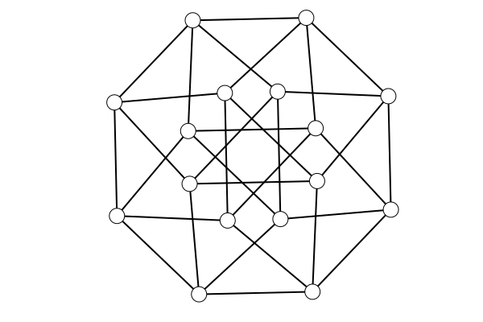
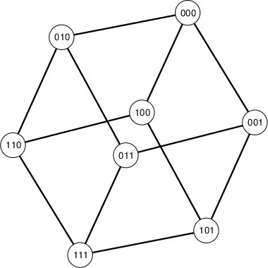
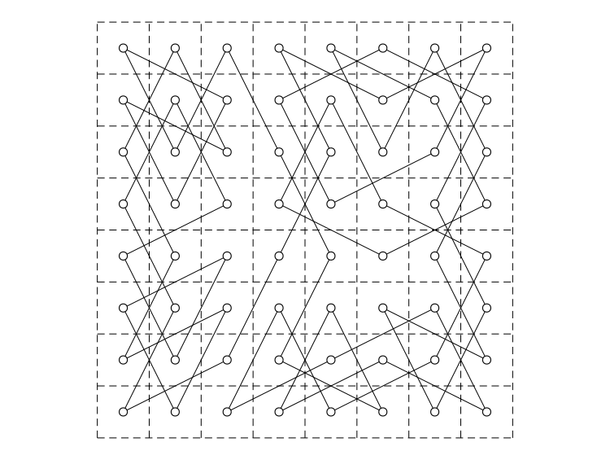

DrawSimpleGraphs
Drawing functions for SimpleGraphs.
Given an UndirectedGraph, the function draw(G) draws G in its current embedding. If the graph does not have an embedding, then it is given a circular embedding.
If further operations on the drawing are desired, then Plots or SimpleDrawing functions may be used.
julia> using SimpleGraphs, DrawSimpleGraphs, Plots
julia> G = Cube(4)
Cube graph Q(4) (n=16, m=32)
julia> embed(G,:combined)
julia> draw(G)
julia> savefig("four-cube.png")
The draw function may be called with an optional second argument: draw(G,clear_first). If called as draw(G,false) then the drawing window is not erased prior to drawing.
Alternatively, draw!(G) is equivalent to draw(G,false).
Extra drawing functions
draw_nodes(G)just draws the vertices.draw_edges(G)just draws the edges.
Embedding Commands
The following functions reside in SimpleGraphs. They are used to create and manipulate embeddings associated with a graph.
Create an embedding
embed(G,method) creates a new embedding of G. The second argument method is a symbol associated with an embedding algorithm. The method can be one of the following:
:circular(default) arranges the vertices in a circle.:randomarranges the vertices at random.:springarranges the vertices by modeling edges as springs holding repelling vertices together.:stressarranges the vertices by attempting to put vertices geometric distance equal to their graph-theoretic distance.:combinedis equivalent to first performing aspringembedding followed by astressembedding. Often gives nice results.:spectralarranges the vertices based on the eigenvectors of the Laplacian matrix of the graph. Specifically, thex-coordinates come from the eigenvector
associated with the second smallest eigenvalue, and the y-coordinates come from the eigenvector associated with the third smallest.
In addition, embed(G,xy) will give the graph an embedding specified in the dictionary xy where maps vertices to two-element vectors.
Modify an embedding
has_embedding(G)checks to see if the graph has been provided with an embedding.getxy(G)retrieves a copy of the embedding. Modifying the output ofgetxydoes not modify the embedding of the graph.set_line_color(G,name)assigns the color in the stringnameto the edges and boundaries of the vertices. Defaults to"black".get_line_color(G)returns the line color.set_fill_color(G,name)assigns the color in the stringnameto be the fill color of the vertices. Defaults to"white".set_vertex_size(G,sz)sets the size of the drawn vertices to
the integer sz.
get_vertex_size(G)returns the size of the vertices.transform(G,A,b)applies an affine transformation to all coordinates in the graph's drawing. HereAis 2-by-2 matrix andbis a 2-vector. Each pointpis mapped toA*p+b. Special
versions of this command are provided by scale, rotate, translate, and recenter. (Note: Some of these function names cause collisions, so I may change them.)
edge_length(G,uv)returns the geometric length of the edgeuv. Note this fails ifGdoes not have an embedding.
edge_length(G) returns an array of the edge lengths.
Vertex Labels
Use draw_labels(G) after draw(G) to insert vertex names into the drawing. Optionally, add a font size, draw_labels(G,sz), to make the labels small enough to fit (or use set_vertex_size to make larger vertices).
julia> G = Cube(3)
Cube graph Q(3) (n=8, m=12)
julia> embed(G,:combined)
julia> set_vertex_size(G,20)
julia> draw(G)
julia> draw_labels(G)
Example: Knight's Tour
The function KnightTourDrawing(r,c) to solve the problem of finding a knight's tour on an r-by-c chess board and drawing the solution.
julia> KnightTourDrawing(8,8)
Searching for a Hamiltonian cycle in an 8-by-8 Knight's move graph
1374.144891 seconds (9.02 G allocations: 1002.489 GiB, 12.68% gc time)
Finished